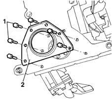
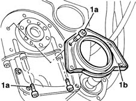
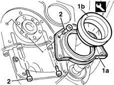

1020D30 oil seal cover, fly wheel side - r + r and replace seals
- Path
- Procedures > 10 ENGINE UNIT > 1020 CRANKCASE SUMP AND COVERS > 1020D oil seals on crank shaft > 1020D30 oil seal cover, fly wheel side - r + r and replace seals
- Kind
- repair procedure (removal / refitting; the operation number is the code)
- Applies to
- all engines; all production periods
- Interactive page
- https://sloeber94.github.io/elrnDB-fMltpl/en/#/2891209
Applies to: engines: 1.6 16v; all production periods
 Removing
Removing
 Refitting
Refitting1020A20 crank case oil sump - r + r clean seals for sealant application
1. Unscrew the retaining bolts.
2. Remove the crankshaft rear cover

Applies to: engines: 1.6 16v; all production periods
Refitting
RemovingCheck that the sealing cover is undamaged.
Replace the gasket.
Fitt the cover and tighten the retaining bolts to torque.
 | Fastening | Component | Ø | Value (daNm) |
|---|---|---|---|---|
- | Bolt | ENGINE OIL DRAIN PLUG | M6 | 0.9 |
1020A20 crank case oil sump - r + r clean seals for sealant application
Applies to: engines: 1.9 JTD 8V; all production periods
Removing
Refitting1. Undo the bolts (1a) and remove the oil sealling cover (1b).

Applies to: engines: 1.9 JTD 8V; all production periods
Refitting
Removing1. Fit cover (1a) using installing tool (1b).
2. Tighten the fixing bolts to torque.
 | Name | Country |
|---|---|---|
1a | Fitting tool | 1.860.817.000 |
| Fastening | Component | Ø | Value (daNm) |
|---|---|---|---|---|
2 | Bolt | FLYWHEEL SIDE COVER | M6 | 08 - 10 |
